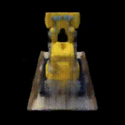

Project 4: Neural Radiance Field (NeRF)
3D Scene Reconstruction through Neural Rendering and Inverse Rendering
Part 0: Calibrating Your Camera and Capturing a 3D Scan
In this part, we use ArUco tags to calibrate camera parameters and estimate camera poses for creating a 3D scan of an object.
Part 0.1: Camera Calibration
We capture 30-50 images of ArUco tags and used OpenCV to compute camera intrinsics and distortion coefficients.
Part 0.2: 3D Object Scan
We capture 30-50 images of a chosen object from different angles with consistent lighting and focus.
Here we present 2 sample images of the chosen object and ArUco tag.
Part 0.3: Camera Pose Estimation
Using the calibrated camera parameters, we estimate camera poses for each image using Perspective-n-Point (PnP) algorithm.
Here we present 2 screen shots of the estimated camera poses.
Part 0.4: Dataset Creation
We undistorte images and packaged them into a dataset format compatible with NeRF training.
Part 1: Fit a Neural Field to a 2D Image
We implemented a Multilayer Perceptron (MLP) with Positional Encoding to represent a 2D image as a neural field.
Model Architecture
MLP Structure:
- Input: 2D pixel coordinates (x, y)
- Positional Encoding: L=10
- Hidden layers: 4 layers with 256 neurons each
- Activation: ReLU (hidden), Sigmoid (output)
- Output: RGB color values
Training Progression
The network gradually learns to reconstruct the target image through optimization.


Hyperparameter Analysis
We experimented with different positional encoding frequencies and network widths.
How Hyperparameters Influence Reconstructed Images
Generally, higher max positional encoding frequency and wider networks yield higher PSNR scores. Each hyperparameter affects image quality in distinct but complementary ways:
Positional Encoding Frequency
Low Frequency Issues:
- Frequency Aliasing: High frequencies "fold back" as false low frequencies, causing straight lines to appear abnormally curvy
- Low-Pass Filter Effect: Captures only broad shapes and colors while losing fine details
- Blurry Results: Produces smooth, blurry reconstructions lacking sharpness and definition
High Frequency Issues:
- Artifact Introduction: Excessive frequencies can create grid-like artifacts and noise
- Overfitting Risk: May cause the network to fit numerical noise rather than true image structure
- Unnecessary Detail: Captures frequencies far beyond the image's actual content requirements
Network Width (Hidden Layer Size)
Narrow Networks:
- Limited Capacity: Restricted ability to represent complex functions and patterns
- Simplified Reconstructions: Miss subtle color variations and fine details
- Underfitting: Produces overly basic representations of complex scenes
Wide Networks:
- Enhanced Capacity: Larger representational power for complex color gradients and textures
- Detail Preservation: Better at capturing fine textures and subtle variations
- Photorealistic Results: Enables more accurate and nuanced reconstructions
PSNR Curve
Part 2: Neural Radiance Field from Multi-view Images
This part extend the 2D neural field to 3D, creating a Neural Radiance Field (NeRF) that can represent 3D scenes from multi-view images. This implementation reconstructs 3D scenes from 2D images, enabling novel view synthesis and 3D understanding.
Part 2.1: Ray Generation
This subpart impleements transformation helper function including: Camera to World Coordinate Conversion, Pixel to Camera Coordinate Conversion and Pixel to Ray
x_c = pixel_to_camera(K, uv, s) // Pixel to camera coordinates
ray_o, ray_d = pixel_to_ray(K, c2w, uv) // Generate rays
Part 2.2: Sampling along Rays
This subpart discretize rays into samples and applied perturbation during training for better coverage.
t_vals = torch.linspace(near, far, n_samples)
if perturb: t_vals += random_noise
points = ray_o + ray_d * t_vals
| Parameter | Value | Description |
|---|---|---|
| Near/Far Planes | 2.0 / 6.0(data dependent) | Define sampling bounds for synthetic data |
| Number of Samples | 64 | Controls discretization quality |
| Perturbation | True / False | Adds noise for better training coverage |
Part 2.3: Data Loading and Visualization
visualize camera, rays and sample to test our implementation of transformation and sampling function

Part 2.4: NeRF Network Architecture
This subpart constructs a MLP that learns from images and outputs density and view-dependent color.
Network Architecture Details:
- Input: 3D coordinates (x, y, z) and view direction (θ, φ)
- Positional Encoding: L=10 for coordinates, L=4 for view direction
- Hidden Layers: 8 layers with 256 neurons each
- Output: Density (σ) using ReLU and RGB color (c) using Sigmoid
| Parameter | Value | Description |
|---|---|---|
| Position Encoding (Coord) | L=10 | Enables learning high-frequency spatial details |
| Position Encoding (Dir) | L=4 | Captures view-dependent effects |
| Hidden Dimension | 256 | Network capacity and expressiveness |
Part 2.5: Volume Rendering
This subpart implements the volume rendering equation to composite samples along a ray into a final pixel color.
Volume Rendering Equation:
C(r) = ∑i=1N Ti × (1 - exp(-σi × δi)) × ci
where Ti = exp(-∑j=1i-1 σj × δj)
alphas = 1 - exp(-sigmas * step_size)
transmittance = cumprod(1 - alphas)
weights = transmittance * alphas
rendered_color = sum(weights * rgbs)
Training Pipeline and Optimization for lego test data
Training Strategy:
- Optimizer: Adam with learning rate 5e-4, weight decay 1e-5
- Learning Rate Schedule: Cosine annealing from 5e-4 to 1e-5 over 2000 steps
Training Progress
The NeRF gradually learns to reconstruct the 3D scene from multi-view images.

Validation PSNR
Novel View Synthesis
A novel view video using the given camera trajectory.
Part 2.6: Training with Custom Data
This part applies the NeRF implementation to the custom dataset collected in Part 0.
Dataset-Specific Parameter Adjustments
Sampling and training parameters
| Parameter | Custom Dataset | Rationale |
|---|---|---|
| Near Plane | 0.02 | Real objects are much closer to camera in our setup |
| Far Plane | 1 | Limited depth range for tabletop objects |
| Samples per Ray | 64 | balence between quality and training speed |
| Batch Size | 1024->4096->10000 | robust learning |
| Learning Rate | 1e-3 | Higher rate initially with Adam and scheduler to modify |
| LR Schedule | Step Decay | Step decay at 2k, 5k, 10k iterations for stability |
| Weight Decay | 1e-6 | Reduced regularization for complex textures |
| Training Iterations | 20,000 | Extended training for better texture detail |
Challenges and Solutions
Challenge 1: tuning far near sample ends
Problem: struggle to find the best far near distance for sampling
Solution: visualize in viser to see the rough distance
Challenge 2: Limited Camera Views
Problem: Only 30-50 images vs. 100+ in synthetic dataset
Solution: use data augmentation strategy and longer training
Challenge 3: convergence
Problem: loss and PSNR jitters as training
Solution: use scheduler to constrain the learning rate and more iterations
Challenge 4: not enough momery
Problem: original picture with high resolution yields large space to train
Solution: resize to 200x200, also solves the size mismatch problem
Training Progress on Custom Object
Training Loss
Novel View Synthesis of Custom Object


Conclusion
This project demonstrated the complete pipeline for creating Neural Radiance Fields from multi-view images:
- Camera calibration and pose estimation using ArUco tags provides accurate camera parameters
- Neural fields with positional encoding can effectively represent 2D images
- NeRF extends this concept to 3D, enabling novel view synthesis from sparse inputs
- Volume rendering allows differentiable rendering of neural radiance fields
- The approach generalizes well to custom datasets with proper parameter tuning